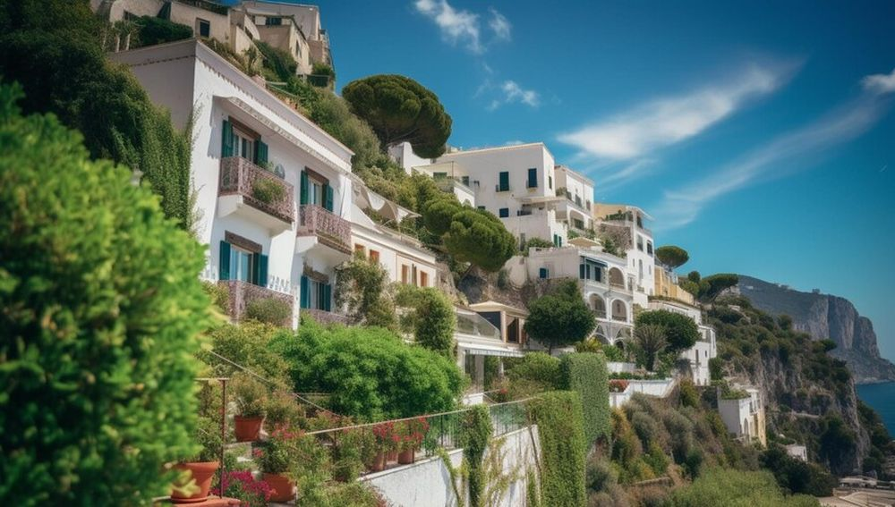

Descoperă Capri - O bijuterie insulară în inima Mării Tireniene
Capri este o insulă spectaculoasă din Italia, faimoasă pentru frumusețea sa naturală și atracțiile sale unice:
-

Grotta Azzurra - Peștera albastră
O peșteră subacvatică cu apă albastră strălucitoare, o experiență uimitoare pentru turiști.
-

Faraglioni Rocks - Formațiuni stâncoase
Stâncile iconică de pe coasta Capri, cunoscute pentru frumusețea lor și legendele asociate.
-

Anacapri - Atracții autentice
Un oraș pitoresc situat pe vârful insulei, oferind priveliști panoramice și atracții tradiționale.
-

Villa Jovis - Ruine istorice
O vilă romană în ruine, asociată cu împăratul Tiberius, cu priveliști impresionante asupra insulei.
-

Marina Piccola - Plajă pitorească
O plajă mică și frumoasă, perfectă pentru relaxare și admirarea peisajelor maritime.
Concluzii
Capri oferă o escapadă insulară memorabilă, cu peisaje uimitoare și atracții unice.